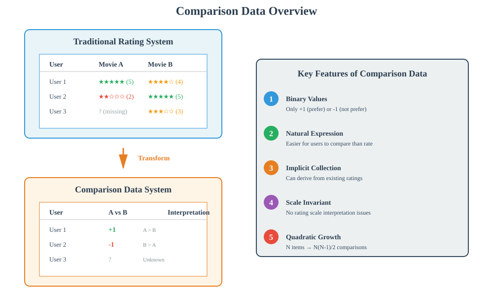
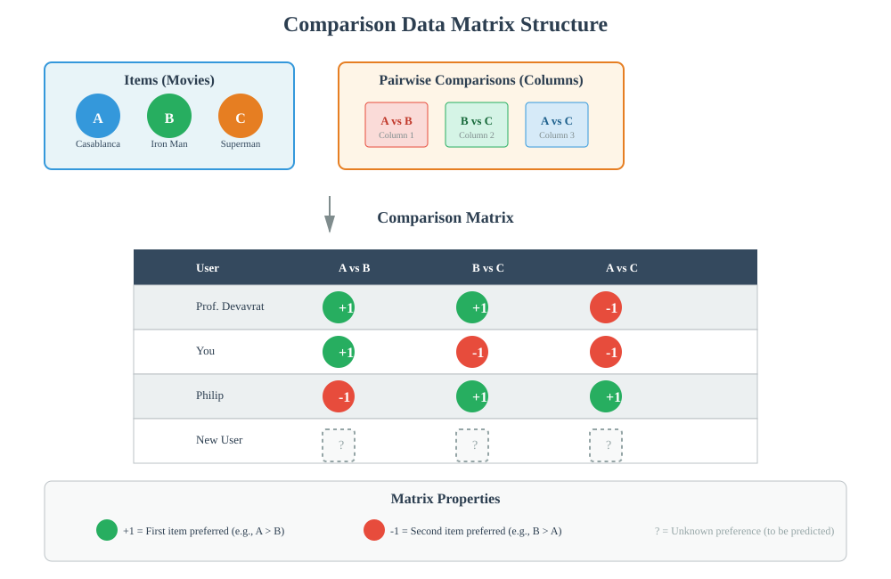
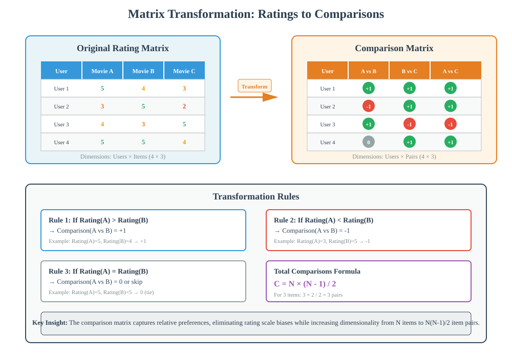
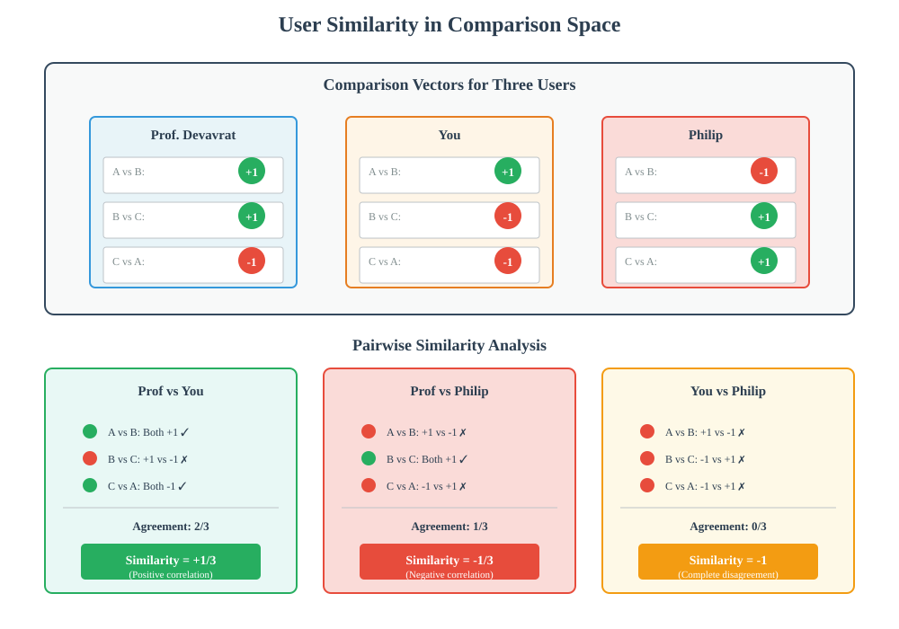
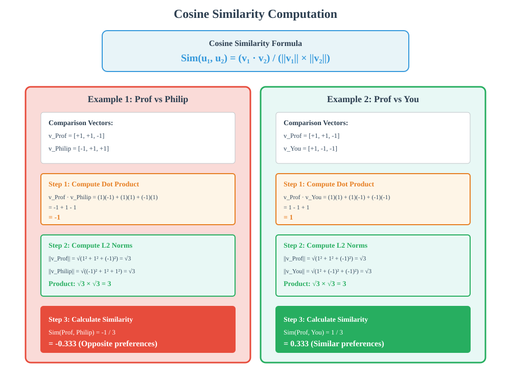
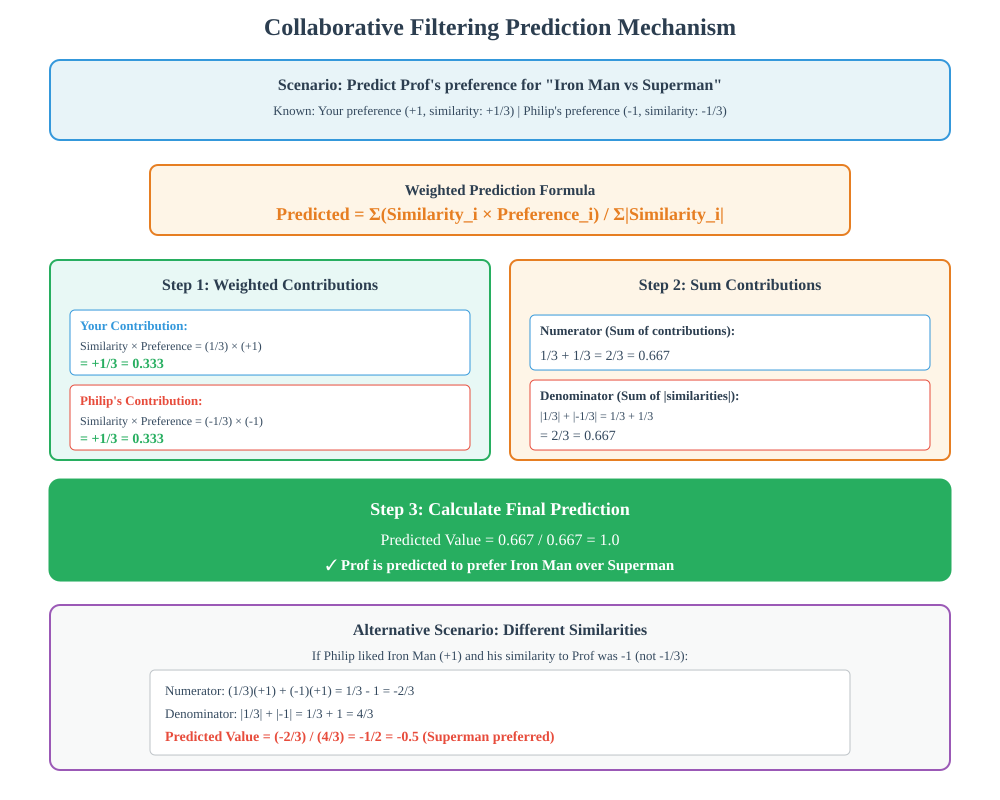
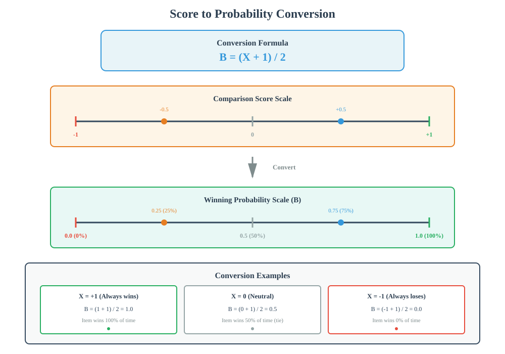
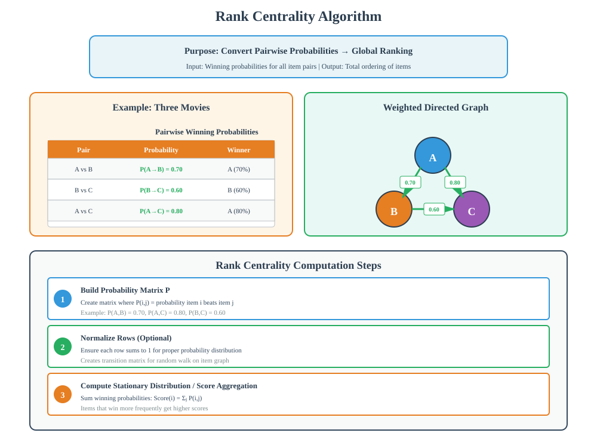
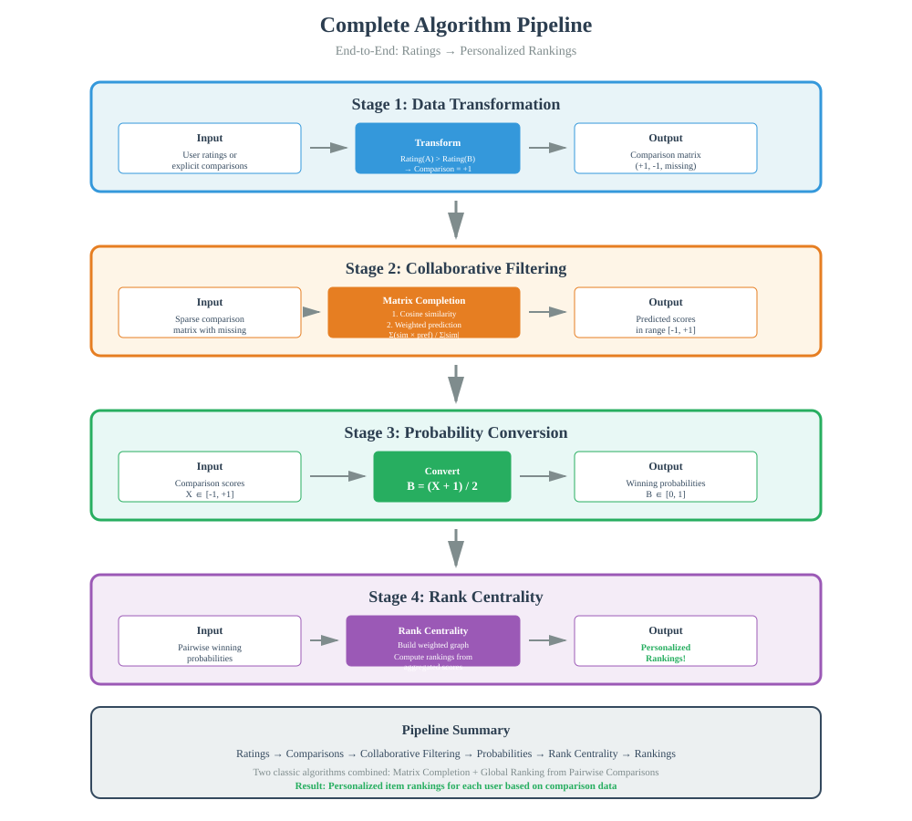

Personalization using Comparison Data
📚 Quick Navigation
- Introduction
- Comparison Data Fundamentals
- Matrix Transformation
- User-User Collaborative Filtering
- Similarity Computation
- Prediction Mechanism
- From Scores to Rankings
- Rank Centrality Application
- Complete Algorithm Pipeline
- Implementation Examples
- Advantages and Challenges
- References & Further Reading
Introduction
Personalization using comparison data represents a powerful approach to building recommendation systems when user preferences are expressed through pairwise comparisons rather than explicit ratings. This methodology combines collaborative filtering with rank centrality to produce personalized rankings for users.

Key Concepts:
- Comparison Data: User preferences expressed as pairwise comparisons between items (e.g., "I prefer Movie A over Movie B")
- Matrix Completion: Filling unknown entries in user-item interaction matrices
- Collaborative Filtering: Predicting preferences based on similar users' behaviors
- Rank Centrality: Algorithm for obtaining global rankings from pairwise comparison data
Real-World Application:
Consider Netflix's recommendation system. When users rate movies, they implicitly provide comparison data. A rating of 5 for Casablanca and 4 for One Flew Over the Cuckoo's Nest indicates that the user prefers Casablanca. This comparison information can be leveraged to predict rankings for unwatched movies.
Comparison Data Fundamentals
🎯 What is Comparison Data?
Comparison data consists of user preferences expressed as pairwise comparisons between items rather than absolute ratings.
Comparison vs Rating Data:
- Rating Data: User assigns score (e.g., 1-5 stars) to individual items
- Comparison Data: User indicates preference between pairs of items (e.g., "A > B")
Sources of Comparison Data:
- Explicit Comparisons: Users directly compare item pairs
- Implicit Comparisons: Derived from ratings (rating A=5, B=4 implies A>B)
- Behavioral Data: Click patterns, viewing time, purchase history
📊 Mathematical Representation
Each comparison can be represented as:
Comparison(i, j) = +1 (if item i is preferred over item j)
Comparison(i, j) = -1 (if item j is preferred over item i)
Properties:
- Binary Values: Only +1 or -1 entries
- Antisymmetry: If Comparison(i,j) = +1, then Comparison(j,i) = -1
- Sparsity: Most comparisons are unknown (missing data)

Matrix Transformation
🔄 From Ratings to Comparisons
The transformation process converts traditional user-item rating matrices into comparison-based matrices with a different structure.
Original Matrix Structure:
- Rows: Users
- Columns: Individual items
- Entries: Ratings (e.g., 1-5 stars) or missing values
Transformed Matrix Structure:
- Rows: Users
- Columns: Ordered pairs of items
- Entries: +1, -1, or missing
📐 Number of Comparisons
For N items, the total number of possible pairwise comparisons is:
Number of Comparisons = N × (N - 1) / 2
Examples:
- N = 3 items: 3 × (3-1) / 2 = 3 comparisons
- N = 10 items: 10 × (10-1) / 2 = 45 comparisons
- N = 100 items: 100 × (100-1) / 2 = 4,950 comparisons
Transformation Example:
Consider three movies: A (Casablanca), B (One Flew Over the Cuckoo's Nest), C (Iron Man)
Possible Comparison Columns:
- AB: A compared to B
- BC: B compared to C
- AC: A compared to C
If a user rated A=5, B=4, C=3, the transformed row becomes:
- AB: +1 (A > B)
- BC: +1 (B > C)
- AC: +1 (A > C)

Key Observations:
- Increased Dimensionality: Columns grow from N to N(N-1)/2
- Consistency: Transitive relationships should ideally hold (if A>B and B>C, then A>C)
- Sparsity: Most users compare only a small subset of item pairs
User-User Collaborative Filtering
👥 Collaborative Filtering for Comparison Data
User-user collaborative filtering adapts seamlessly to comparison data by finding similar users based on their comparison patterns and using their preferences to predict unknown comparisons.
Core Principle:
Users who agree on known comparisons are likely to agree on unknown comparisons.
Algorithm Steps:
- Compute Similarity: Calculate similarity between users based on overlapping comparisons
- Identify Neighbors: Find users most similar to the target user
- Weighted Prediction: Combine neighbors' preferences using similarity weights
- Generate Recommendations: Predict comparison values for unknown pairs
🔍 Similarity in Comparison Space
When comparing users in the comparison data setting, we measure agreement on shared item pairs.
Overlap Analysis:
Consider two users who both provided comparisons for movies A, B, and C:
User 1 (You):
- AB: +1 (A > B)
- BC: -1 (C > B)
- AC: +1 (A > C)
User 2 (Prof):
- AB: +1 (A > B)
- BC: +1 (B > C)
- AC: -1 (C > A)
Agreement: They agree on 1 out of 3 comparisons (AB)

Similarity Computation
📊 Cosine Similarity Formula
Cosine similarity measures the angle between two user vectors in the comparison space:
Sim(User₁, User₂) = (v₁ · v₂) / (||v₁|| × ||v₂||)
Where:
- v₁, v₂: User comparison vectors (containing +1, -1, or 0 for unknown)
- v₁ · v₂: Dot product of the vectors
- ||v₁||, ||v₂||: L2 norms (magnitudes) of the vectors
🧮 Detailed Calculation Example
Scenario: Computing similarity between Prof and Philip
Prof's Comparisons:
- AB: +1
- BC: +1
- CA: -1
Philip's Comparisons:
- AB: -1
- BC: +1
- CA: +1
Step 1: Compute Dot Product
v_Prof · v_Philip = (1 × -1) + (1 × 1) + (-1 × 1)
= -1 + 1 - 1
= -1
Step 2: Compute L2 Norms
||v_Prof|| = √(1² + 1² + (-1)²) = √3
||v_Philip|| = √((-1)² + 1² + 1²) = √3
Step 3: Calculate Similarity
Sim(Prof, Philip) = -1 / (√3 × √3)
= -1 / 3
= -0.333
Interpretation:
- Positive Similarity: Users have similar preferences
- Negative Similarity: Users have opposite preferences
- Zero Similarity: No correlation between preferences
📈 Similarity Example 2
Computing similarity between Prof and You:
Your Comparisons:
- AB: +1
- BC: -1
- CA: -1
Prof's Comparisons:
- AB: +1
- BC: +1
- CA: -1
Calculation:
Dot Product = (1 × 1) + (1 × -1) + (-1 × -1)
= 1 - 1 + 1
= 1
||v_Prof|| = √3
||v_You|| = √3
Sim(Prof, You) = 1 / (√3 × √3)
= 1 / 3
= 0.333

Prediction Mechanism
🎯 Weighted Prediction Formula
To predict an unknown comparison for a target user, we combine similar users' known preferences weighted by their similarity scores:
Predicted_Value = Σ(Similarity_i × Preference_i) / Σ|Similarity_i|
Where:
- Similarity_i: Similarity between target user and neighbor i
- Preference_i: Neighbor i's preference (+1 or -1) for the comparison
- Σ|Similarity_i|: Sum of absolute similarity values (normalization)
📝 Detailed Prediction Example
Scenario: Predicting Prof's preference for "Iron Man vs Superman"
Known Information:
- You: Like Iron Man over Superman (+1), Similarity to Prof = +1/3
- Philip: Dislike Iron Man over Superman (-1), Similarity to Prof = -1/3
Step-by-Step Calculation:
Step 1: Compute Weighted Preferences
Your Contribution = Similarity_You × Preference_You
= (1/3) × (+1)
= 1/3
Philip's Contribution = Similarity_Philip × Preference_Philip
= (-1/3) × (-1)
= 1/3
Step 2: Sum Contributions
Numerator = 1/3 + 1/3 = 2/3
Step 3: Normalize by Sum of Absolute Similarities
Denominator = |1/3| + |-1/3| = 1/3 + 1/3 = 2/3
Step 4: Calculate Prediction
Predicted_Value = (2/3) / (2/3) = +1
Interpretation: Prof is predicted to prefer Iron Man over Superman.
🔄 Alternative Scenario
Modified Example: What if Philip actually liked Iron Man and his similarity to Prof was -1 (not -1/3)?
New Calculation:
Your Contribution = (1/3) × (+1) = 1/3
Philip's Contribution = (-1) × (+1) = -1
Numerator = 1/3 + (-1) = -2/3
Denominator = |1/3| + |-1| = 1/3 + 1 = 4/3
Predicted_Value = (-2/3) / (4/3) = -1/2
Interpretation: Prof is predicted to prefer Superman over Iron Man, but weakly (value between -1 and 0).

Key Insights:
- Predicted values typically fall between -1 and +1 (not exactly -1 or +1)
- Similar users with same preferences reinforce the prediction
- Similar users with opposite preferences cancel out
- Dissimilar users with opposite preferences actually agree (negative × negative = positive)
From Scores to Rankings
🎲 Probabilistic Interpretation
The predicted comparison scores (values between -1 and +1) can be interpreted as probabilities through a probabilistic framework.
Special Values:
- Score = +1: Item i always wins against item j (100% probability)
- Score = -1: Item i always loses to item j (0% probability)
- Score = 0: Item i wins 50% of the time (tie)
📊 Conversion Formula
To convert a predicted score X ∈ [-1, +1] to a winning probability:
B = (X + 1) / 2
Where:
- B: Probability that the first item wins
- X: Predicted comparison score
- 1 - B: Probability that the second item wins
Examples:
- X = +1: B = (1+1)/2 = 1.0 (100% win rate)
- X = 0: B = (0+1)/2 = 0.5 (50% win rate)
- X = -1: B = (-1+1)/2 = 0.0 (0% win rate)
- X = -0.5: B = (-0.5+1)/2 = 0.25 (25% win rate)
🎯 Example Application
Scenario: Iron Man vs Superman with predicted score = -1/2
Calculation:
B = (-1/2 + 1) / 2
= (1/2) / 2
= 1/4
= 0.25
Interpretation: Iron Man wins against Superman 25% of the time, meaning Superman is the stronger candidate.

Coin Toss Analogy:
Think of the comparison as tossing a biased coin with bias B:
- Heads (probability B): First item wins
- Tails (probability 1-B): Second item loses
This probabilistic view provides a natural way to handle uncertain preferences and convert them into rankings.
Rank Centrality Application
🏆 From Pairwise Probabilities to Global Rankings
Once we have winning probabilities for all item pairs, we can apply rank centrality to obtain a global ranking of all items for each user.
Rank Centrality Algorithm:
Rank centrality is designed to compute global rankings from pairwise comparison data where we know the probability of one item defeating another.
Input:
- Pairwise Winning Probabilities: B(i,j) = probability item i beats item j
- Derived from predicted scores using the conversion formula
Output:
- Global Ranking: A total ordering of all items for a specific user
🔧 How Rank Centrality Works
Core Principle:
Items that win more frequently against other items receive higher ranks.
Mathematical Foundation:
Rank centrality treats the comparison data as a weighted directed graph:
- Nodes: Items (movies, products, etc.)
- Edges: Directed edges from i to j with weight B(i,j)
- Ranks: Computed based on the stationary distribution of a random walk
Simplified Process:
- Build Probability Matrix: Create matrix P where P(i,j) = B(i,j)
- Normalize Rows: Ensure each row sums to 1
- Compute Stationary Distribution: Find the principal eigenvector
- Rank Items: Sort items by their stationary distribution values

Example:
Consider three movies: A, B, C with pairwise probabilities:
- B(A,B) = 0.7: A beats B 70% of the time
- B(B,C) = 0.6: B beats C 60% of the time
- B(A,C) = 0.8: A beats C 80% of the time
Rank Centrality Output: A > B > C (A ranked highest)
Complete Algorithm Pipeline
🔄 End-to-End Workflow
The complete personalization pipeline combines multiple algorithms to transform comparison data into personalized rankings.
Stage 1: Data Transformation
Input: User ratings or explicit comparisons
Process: Transform to comparison matrix (rows=users, columns=item pairs)
Output: Matrix with +1, -1, and missing values
Stage 2: Collaborative Filtering
Input: Comparison matrix with missing values
Process:
- Compute user similarities using cosine similarity
- Predict missing comparison values using weighted neighbors
Output: Completed comparison matrix with values in [-1, +1]
Stage 3: Probability Conversion
Input: Predicted comparison scores
Process: Apply conversion formula B = (X + 1) / 2
Output: Pairwise winning probabilities
Stage 4: Rank Centrality
Input: Pairwise winning probabilities
Process: Apply rank centrality algorithm
Output: Global ranking of items for each user

📋 Algorithm Pseudocode
Algorithm: Personalized Ranking from Comparison Data
Input:
- Users U = {u₁, u₂, ..., uₘ}
- Items I = {i₁, i₂, ..., iₙ}
- Partial comparison data C[u, (i,j)] ∈ {+1, -1, missing}
Output:
- Personalized ranking R[u] for each user u
# Stage 1: Matrix Transformation (if starting from ratings)
for each user u in U:
for each pair (i,j) where i,j in rated_items[u]:
if rating[u,i] > rating[u,j]:
C[u, (i,j)] = +1
else:
C[u, (i,j)] = -1
# Stage 2: Collaborative Filtering
for each user u in U:
# Compute similarities with all other users
for each user v in U where v ≠ u:
similarity[u,v] = cosine_similarity(C[u], C[v])
# Predict missing comparisons
for each missing comparison (i,j):
numerator = 0
denominator = 0
for each user v with known C[v,(i,j)]:
numerator += similarity[u,v] × C[v,(i,j)]
denominator += |similarity[u,v]|
C[u,(i,j)] = numerator / denominator
# Stage 3: Convert to Probabilities
for each user u in U:
for each pair (i,j):
P[u,i,j] = (C[u,(i,j)] + 1) / 2
# Stage 4: Apply Rank Centrality
for each user u in U:
R[u] = rank_centrality(P[u])
return R
Implementation Examples
💻 Python Implementation
import numpy as np
from scipy.spatial.distance import cosine
class ComparisonRecommender:
def __init__(self, n_users, n_items):
self.n_users = n_users
self.n_items = n_items
self.n_comparisons = n_items * (n_items - 1) // 2
# Comparison matrix: users × item_pairs
self.comparison_matrix = np.full((n_users, self.n_comparisons), np.nan)
# Mapping from pair indices to item pairs
self.pair_to_items = {}
self._initialize_pair_mapping()
def _initialize_pair_mapping(self):
"""Create mapping between comparison index and item pairs"""
idx = 0
for i in range(self.n_items):
for j in range(i+1, self.n_items):
self.pair_to_items[idx] = (i, j)
idx += 1
def add_comparison(self, user_id, item_i, item_j, preference):
"""
Add comparison data
preference: +1 if item_i > item_j, -1 if item_j > item_i
"""
pair_idx = self._get_pair_index(item_i, item_j)
if item_i < item_j:
self.comparison_matrix[user_id, pair_idx] = preference
else:
self.comparison_matrix[user_id, pair_idx] = -preference
def _get_pair_index(self, item_i, item_j):
"""Get index of item pair in comparison matrix"""
if item_i > item_j:
item_i, item_j = item_j, item_i
# Calculate index using combinatorial formula
idx = 0
for i in range(item_i):
idx += (self.n_items - i - 1)
idx += (item_j - item_i - 1)
return idx
def compute_similarity(self, user_i, user_j):
"""Compute cosine similarity between two users"""
vec_i = self.comparison_matrix[user_i]
vec_j = self.comparison_matrix[user_j]
# Only consider non-missing values
mask = ~(np.isnan(vec_i) | np.isnan(vec_j))
if np.sum(mask) == 0:
return 0.0
vec_i_clean = vec_i[mask]
vec_j_clean = vec_j[mask]
# Cosine similarity
dot_product = np.dot(vec_i_clean, vec_j_clean)
norm_i = np.linalg.norm(vec_i_clean)
norm_j = np.linalg.norm(vec_j_clean)
if norm_i == 0 or norm_j == 0:
return 0.0
return dot_product / (norm_i * norm_j)
def predict_comparison(self, target_user, item_i, item_j, k_neighbors=5):
"""
Predict comparison value for target user
"""
pair_idx = self._get_pair_index(item_i, item_j)
# Check if already known
if not np.isnan(self.comparison_matrix[target_user, pair_idx]):
return self.comparison_matrix[target_user, pair_idx]
# Find users who have this comparison
similarities = []
preferences = []
for user in range(self.n_users):
if user == target_user:
continue
if not np.isnan(self.comparison_matrix[user, pair_idx]):
sim = self.compute_similarity(target_user, user)
if sim != 0:
similarities.append(sim)
preferences.append(self.comparison_matrix[user, pair_idx])
if len(similarities) == 0:
return 0.0 # No information available
# Sort by similarity and take top k
sim_array = np.array(similarities)
pref_array = np.array(preferences)
# Weighted prediction
numerator = np.sum(sim_array * pref_array)
denominator = np.sum(np.abs(sim_array))
return numerator / denominator if denominator != 0 else 0.0
def convert_to_probability(self, comparison_score):
"""Convert comparison score to winning probability"""
return (comparison_score + 1) / 2
def rank_items_for_user(self, user_id):
"""
Generate ranking of all items for a user using rank centrality
"""
# Build pairwise probability matrix
prob_matrix = np.zeros((self.n_items, self.n_items))
for i in range(self.n_items):
for j in range(i+1, self.n_items):
score = self.predict_comparison(user_id, i, j)
prob_ij = self.convert_to_probability(score)
prob_matrix[i, j] = prob_ij
prob_matrix[j, i] = 1 - prob_ij
# Apply simplified rank centrality: sum of winning probabilities
scores = np.sum(prob_matrix, axis=1)
# Return items sorted by score (descending)
ranking = np.argsort(-scores)
return ranking, scores[ranking]
# Example Usage
recommender = ComparisonRecommender(n_users=3, n_items=4)
# Add comparison data
# User 0 preferences
recommender.add_comparison(0, 0, 1, +1) # Item 0 > Item 1
recommender.add_comparison(0, 1, 2, -1) # Item 2 > Item 1
recommender.add_comparison(0, 0, 2, +1) # Item 0 > Item 2
# User 1 preferences
recommender.add_comparison(1, 0, 1, +1)
recommender.add_comparison(1, 1, 2, +1)
recommender.add_comparison(1, 0, 2, -1)
# Predict ranking for User 2
ranking, scores = recommender.rank_items_for_user(2)
print(f"Ranking for User 2: {ranking}")
print(f"Scores: {scores}")
🔗 Google Colab Integration

Try the interactive notebook with:
- Complete implementation of comparison-based recommender
- Visualization of user similarities
- Step-by-step prediction examples
- Rank centrality visualization
Advantages and Challenges
✅ Advantages
1. Natural Preference Expression
- Easier for users: Comparing two items is cognitively simpler than absolute rating
- Reduced bias: Eliminates issues like rating scale interpretation differences
- Higher quality data: Users are more confident in relative preferences
2. Implicit Data Collection
- Derived from ratings: Can automatically extract comparisons from existing ratings
- Behavioral signals: Click patterns and interaction time provide implicit comparisons
- No additional user effort: Works with existing data
3. Robust to Rating Scale Differences
- Scale-invariant: Different users' rating habits don't affect comparisons
- Consistent across users: Binary preferences are universally understood
- Cultural independence: Relative preferences transcend cultural rating biases
4. Handles Ordinal Preferences
- Natural for rankings: Directly captures preference ordering
- Transitive relationships: Can infer A>C from A>B and B>C
- Complete ordering: Produces full item rankings for each user
5. Flexible Algorithm Composition
- Modular design: Combines collaborative filtering + rank centrality
- Adaptable: Can incorporate different similarity metrics and ranking algorithms
- Extensible: Easy to add new features or constraints
⚠️ Challenges
1. Quadratic Growth in Comparisons
Issue:
- N items require N(N-1)/2 comparisons
- 100 items = 4,950 comparisons
- 1,000 items = 499,500 comparisons
Mitigation Strategies:
- Focus on popular item pairs
- Use sampling strategies
- Apply dimensionality reduction techniques
2. Sparsity Problem
Issue:
- Users provide comparisons for only small fraction of pairs
- Cold start for new items
- Difficulty finding similar users with overlapping comparisons
Solutions:
- Hybrid approaches combining content-based filtering
- Item-item collaborative filtering
- Transfer learning from related domains
3. Intransitivity in Human Preferences
Issue:
- Users may have intransitive preferences: A>B, B>C, but C>A
- Violates mathematical assumptions
- Can lead to inconsistent rankings
Handling Approaches:
- Aggregate multiple observations
- Use probabilistic models that allow cycles
- Apply consistency penalties
4. Computational Complexity
Issue:
- Large similarity computations: O(U² × C) where U=users, C=comparisons
- Rank centrality overhead: Computing stationary distributions
- Scalability to millions of users
Optimization Techniques:
- Approximate nearest neighbor methods
- Matrix factorization approaches
- Distributed computing frameworks
5. Prediction Uncertainty
Issue:
- Values between -1 and +1 not as interpretable
- Weak predictions near 0
- Difficult to assess confidence
Improvements:
- Provide confidence intervals
- Use ensemble methods
- Incorporate prediction uncertainty in ranking
📊 Comparison with Traditional Approaches
| Aspect | Comparison Data | Traditional Ratings |
|---|---|---|
| Data Collection | More natural, easier | Requires absolute judgment |
| User Burden | Lower cognitive load | Higher effort per item |
| Dimensionality | O(N²) pairs | O(N) items |
| Sparsity | Very high | High |
| Cultural Bias | Minimal | Significant |
| Interpretability | Relative preferences | Absolute scores |
| Cold Start | Challenging | Challenging |
| Scalability | Requires optimization | More straightforward |
References & Further Reading
📚 Academic Papers
- "Active Learning for Personalized Ranking from Pairwise Comparisons"
- Authors: Jamieson, K. & Nowak, R.
- Conference: ICML 2011
-
"Rank Centrality: Ranking from Pairwise Comparisons"
- Authors: Negahban, S., Oh, S., & Shah, D.
- Journal: Operations Research, 2017
-
"Collaborative Filtering via Group-Structured Dictionary Learning"
- Authors: Chiang, K. et al.
- Conference: IJCAI 2013
-
"Choice Models and Permutation Invariance"
- Authors: Maystre, L. & Grossglauser, M.
- Journal: IEEE Transactions on Information Theory, 2018
- Focus on probabilistic models for comparison data
🛠️ Tools & Libraries
- Scikit-learn: Collaborative Filtering
- Documentation: scikit-learn.org
-
Implementations of similarity metrics and nearest neighbors
-
Surprise Library for Recommender Systems
- GitHub: NicolasHug/Surprise
-
Python library for building recommendation systems
-
LensKit for Python
- Website: lenskit.org
- Comprehensive toolkit for recommender system experiments
📖 Books & Courses
- "Recommender Systems: The Textbook"
- Author: Charu Aggarwal
- Publisher: Springer, 2016
- Comprehensive coverage of collaborative filtering techniques
🔗 Related Resources
Hugging Face Models:
- Recommendation Models: huggingface.co/models?pipeline_tag=recommendation
- Ranking Models: Search for "ranking" and "preference learning" models
Additional Reading:
- Netflix Prize Competition documentation
- MovieLens dataset for experimentation
- Bradley-Terry models for pairwise comparisons
Summary
Personalization using comparison data offers a powerful alternative to traditional rating-based recommendation systems. By combining collaborative filtering for matrix completion with rank centrality for global ranking, this approach provides personalized item rankings based on pairwise preference data.
Key Takeaways:
- Comparison data is more natural: Users find it easier to compare items than assign absolute ratings
- Matrix transformation: Converting N items to N(N-1)/2 comparison pairs
- Collaborative filtering adapts seamlessly: Using cosine similarity on comparison vectors
- Probabilistic interpretation: Converting scores to winning probabilities
- Rank centrality produces rankings: Global ordering from pairwise probabilities
- Modular pipeline: Combines existing algorithms in novel way
Algorithm Pipeline Summary:
Ratings/Comparisons → Matrix Transformation → Collaborative Filtering
→ Score Prediction → Probability Conversion → Rank Centrality → Rankings
This methodology demonstrates that sophisticated recommendation systems can be built by intelligently combining fundamental algorithms, without requiring entirely new approaches.